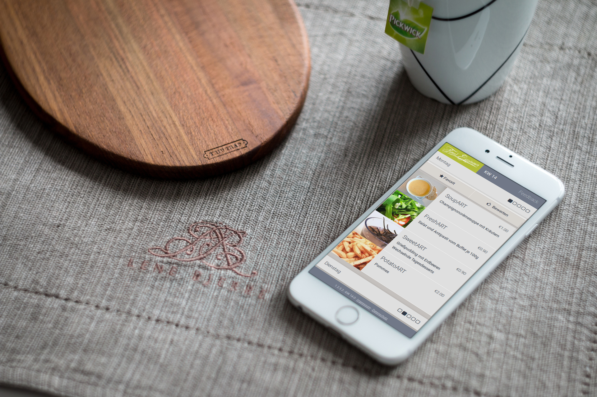
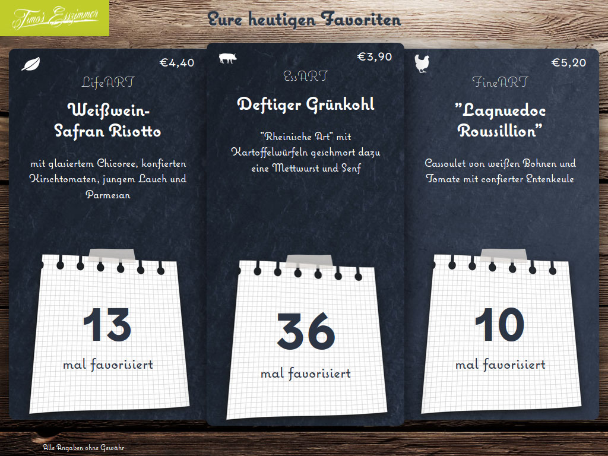
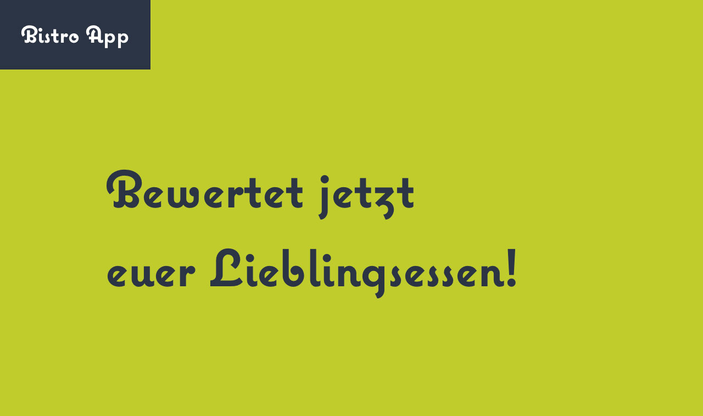
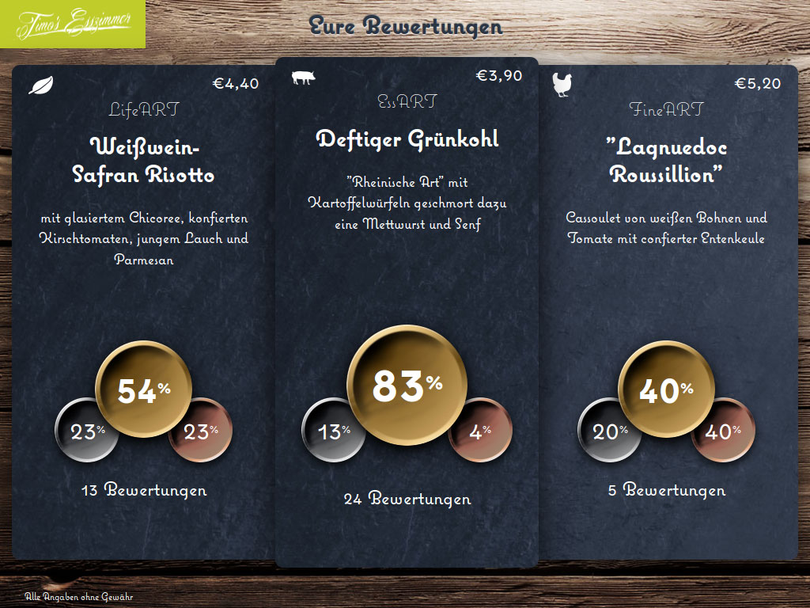
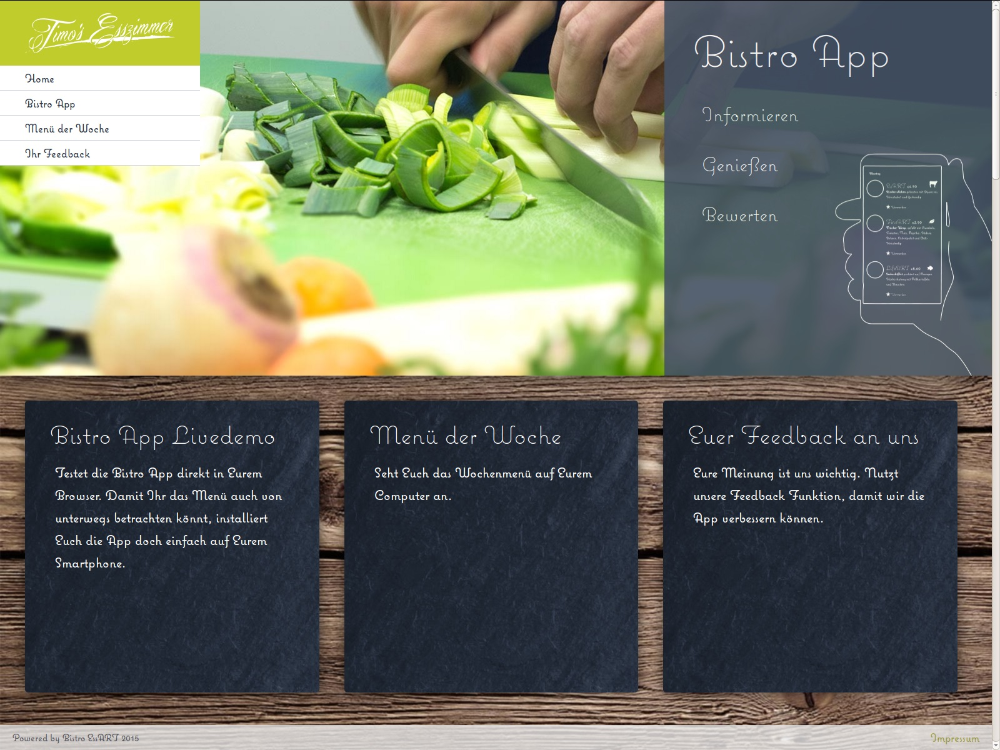
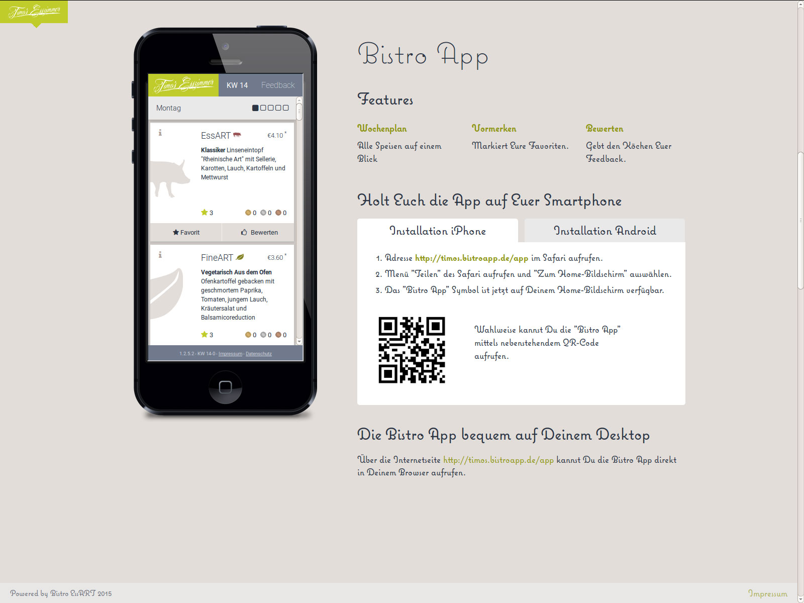
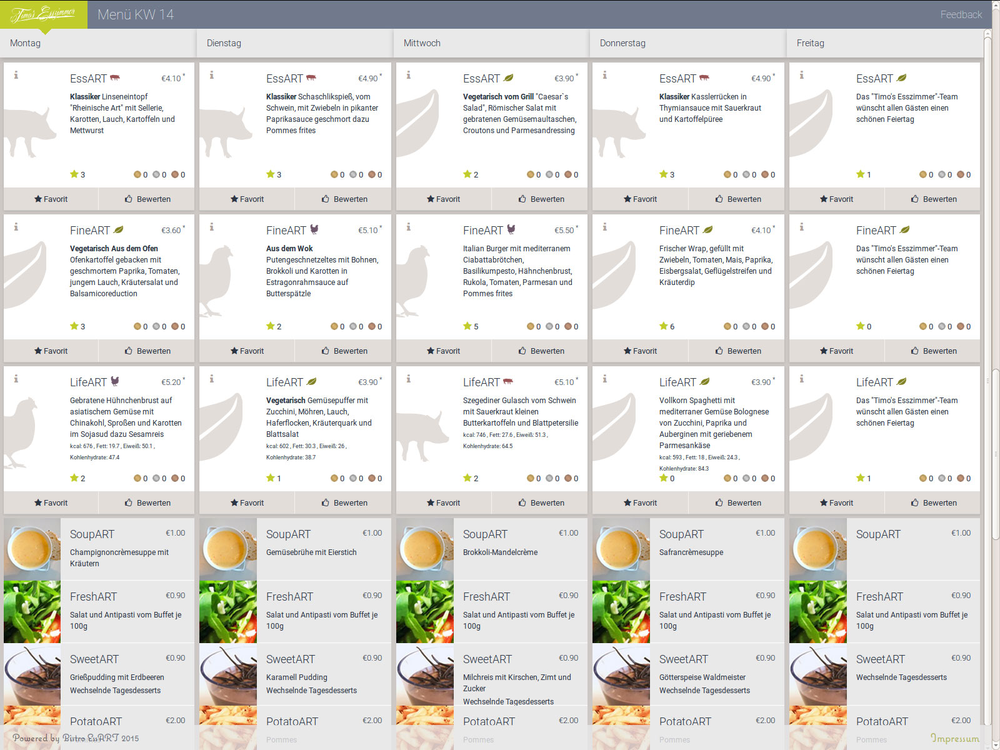
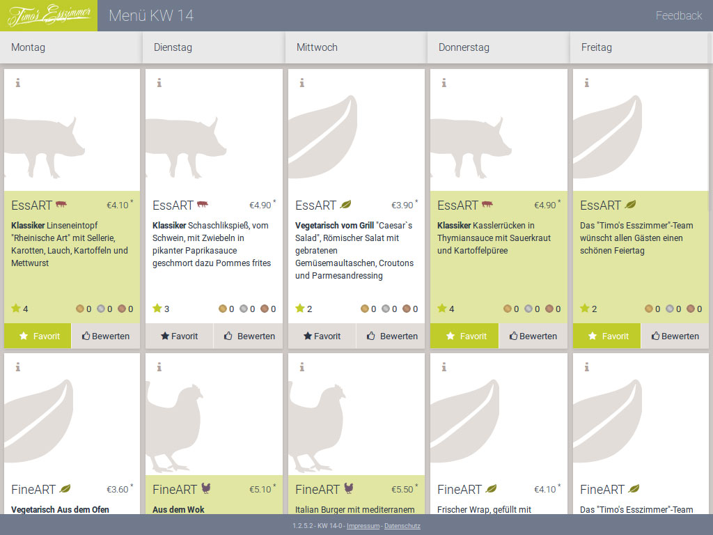
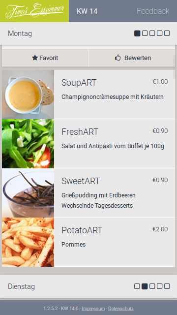

Project
Bistro App

Our Ambition
- Web App for all devices from mobile to desktop
- Pictures of all fresh meal offers
- Daily updates - The most chosen meal
- Big live data presentation - Favourite meal of the day
- Big live data presentation - Live vote during and after lunch
- Help kitchen stuff with the data to improve the service

My Role
- Identify internal ways of advertisement
- Create multichannel ads
- Organize weekly design sprints
- Create a promotion website
- Create the Bistro App with an amazing design
- Help colleagues developing photography skills
- Brand and Icon design

UX Research
- Use the canteen for regular Guerrilla Testing
- Regular feedback from board members
- Regular surveys with the kitchen staff
- Monitor GA data
- Write regular UXR reports using Confluence

The Design1/7
- Advertisement landing page desktop

The Design2/7
- Guide how to install and use the Bistro App

The Design3/7
- Desktop version of the weekly menu list

The Design4/7
- iPad version of the weekly menu list

The Design5/7
- Smartphone version of the weekly menu list
The Design6/7
- Presentation board for the daily favourites
- A Full HD version was presented the whole day on the big display in the canteen
- A version of this board was available for all devices from mobile to desktop
The Design7/7
- Presentation board for the daily votes on the meals
- A Full HD version was presented the whole day on the big display in the canteen
- A version of this board was available for all devices from mobile to desktop